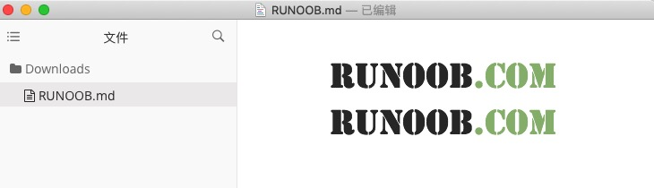
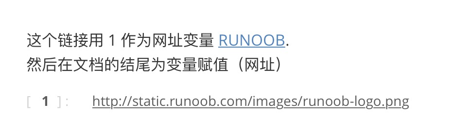
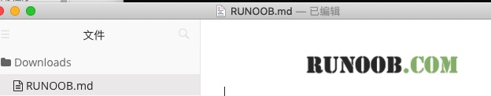

Markdown 画像
画像によりドキュメントがより生き生きとして理解しやすくなります。
Markdownの画像構文は簡潔で柔軟です。
Markdownの画像構文の形式は以下の通りです：
 
- 先頭に感嘆符 !
- 次に角括弧を置き、中に画像の代替テキストを入れます
- 次に普通の括弧を置き、中に画像のURLを入れます。最後に引用符で囲んで任意の'title'属性の文字を追加することもできます。
相対パスの例：
  
絶対パスの例：
 
パス使用のアドバイス：
- プロジェクトの移植を容易にするため、相対パスの使用を推奨します
- 専用の画像フォルダ（images/、assets/ など）を作成することをお勧めします
- 管理しやすいように意味のあるファイル名を使用します
- 異なるOSにおけるパス区切り文字の違いに注意してください
ネットワーク上の画像を直接参照する：
 
表示結果は以下の通りです：

もちろん、URLと同様に画像URLにも変数を使用できます:
这个链接用 1 作为网址变量 [RUNOOB][1]. 然后在文档的结尾为变量赋值（网址） [1]: https://static.jyshare.com/images/runoob-logo.png
表示結果は以下の通りです：

Markdownには画像の高さと幅を指定する方法はまだありません。必要であれば、通常の <img> タグを使用できます。
<img src="../static.jyshare.com/images/runoob-logo.png" width="50%">
表示結果は以下の通りです：

CDNサービスを使用する：
 
ネットワーク画像に関する注意事項：
- 画像URLの安定性とアクセス可能性を確保します
- 画像の著作権問題に注意します
- 読み込み速度とネットワーク環境を考慮します
- 重要な画像はローカルにバックアップすることをお勧めします
画像のaltテキストの重要性
Altテキスト（代替テキスト）は、画像が表示できない場合に代替情報を提供し、アクセシビリティとSEOにとっても重要です：
良いaltテキストの例：
  
避けるべきaltテキスト：
 // 太简单，没有描述性  // 完全没有 alt 文本  // 不描述图片内容
altテキストのベストプラクティス：
- 簡潔でありながら説明的であること
- 画像の主な内容と用途を説明すること
- 「画像」「写真」などの冗長な言葉を避けること
- 装飾的な画像には、空のaltテキストを使用できます
- 文脈を考慮し、意味のある情報を提供すること
画像サイズ制御（HTML方式）
標準のMarkdownは画像サイズの直接制御をサポートしていませんが、HTMLタグを使用できます。
HTML imgタグを使用する：
<img src="image.jpg.html" alt="描述文字" width="300" height="200"> <img src="image.jpg.html" alt="描述文字" width="50%"> <img src="image.jpg.html" alt="描述文字" style="width: 300px; height: auto;">
レスポンシブ画像：
<img src="image.jpg.html" alt="描述文字" style="max-width: 100%; height: auto;">
画像の配置：
<!-- 居中对齐 --> <div align="center"> <img src="image.jpg.html" alt="居中图片" width="400"> </div> <!-- 左对齐（默认） --> <img src="image.jpg.html" alt="左对齐图片" style="float: left; margin-right: 20px;"> <!-- 右对齐 --> <img src="image.jpg.html" alt="右对齐图片" style="float: right; margin-left: 20px;">
リンクと画像の高度な使い方
画像リンクの組み合わせ
画像をリンクのクリック可能な要素として使用します。
基本構文：
[](链接URL)
実際の例：
[](https://github.com/username/project) [](https://example.com "点击访问官网")
一般的な応用シーン：
<!-- 项目徽章 --> [](https://travis-ci.org/user/repo) [](https://opensource.org/licenses/MIT) <!-- 应用商店下载 --> [](https://apps.apple.com/app/your-app) [](https://play.google.com/store/apps/details?id=com.yourapp)
相対パスと絶対パス
相対パスの利点：
<!-- 项目结构 -->
project/
├── README.md
├── docs/
│ ├── guide.md
│ └── images/
│ └── screenshot.png
└── assets/
└── logo.png
<!-- 在 README.md 中 -->

<!-- 在 docs/guide.md 中 -->


パス計画のアドバイス：
- プロジェクトのルートディレクトリに統一されたリソースフォルダを作成する
- 説明的なフォルダ名を使用する
- パス構造の一貫性を維持する
- 静的サイトジェネレーターのパスルールを考慮する
画像の中央揃えと配置
方法1：HTML + CSS
<div style="text-align: center;"> <img src="image.jpg.html" alt="居中图片" style="max-width: 100%;"> </div>
方法2：HTMLの整列属性を使用する
<p align="center"> <img src="image.jpg.html" alt="居中图片" width="400"> </p>
方法3：画像ギャラリーを作成する
<div style="display: flex; justify-content: space-around; flex-wrap: wrap;"> <img src="image1.jpg.html" alt="图片1" style="width: 30%; margin: 10px;"> <img src="image2.jpg.html" alt="图片2" style="width: 30%; margin: 10px;"> <img src="image3.jpg.html" alt="图片3" style="width: 30%; margin: 10px;"> </div>
実用的な画像表示テンプレート：
## 产品展示
### 主要功能
<table>
<tr>
<td align="center">
<img src="./images/feature1.png.html" width="200" alt="功能1">
<br>
<strong>智能识别</strong>
<br>
<sub>AI驱动的图像识别技术</sub>
</td>
<td align="center">
<img src="./images/feature2.png.html" width="200" alt="功能2">
<br>
<strong>快速处理</strong>
<br>
<sub>毫秒级响应速度</sub>
</td>
</tr>
</table>
### 界面预览
| 移动端 | 桌面端 |
|:---:|:---:|
|  |  |
| 响应式设计，完美适配 | 大屏体验，功能齐全 |
パフォーマンス最適化のアドバイス：
- 画像サイズと形式を最適化する（WebP > PNG > JPG）
- 適切な画像サイズを使用し、Webページで大きな画像を拡大縮小しないようにする
- 画像圧縮ツールの使用を検討する
- 異なるデバイス向けに異なるサイズの画像を準備する
リンクと画像のトラブルシューティング
よくある問題と解決策：
- リンクがクリックできない：構文形式を確認し、角括弧と丸括弧が正しく対応していることを確認します
- 画像が表示されない：画像パスとファイルの存在を検証します
- 画像が大きすぎる：HTMLでサイズを制御するか、画像ファイルを最適化します
- リンクを新しいウィンドウで開く：HTMLを使用する<a target="_blank">タグ
デバッグのヒント：
<!-- 测试链接是否有效 --> 测试链接：[点击测试](https://httpbin.org/get) <!-- 测试图片路径 -->  <!-- 如果不显示，尝试绝对路径或检查文件名大小写 -->
リンクと画像のさまざまな使い方を習得することで、内容が豊富でナビゲーションが明確なMarkdownドキュメントを作成できます。これらのスキルは、技術文書、プロジェクト説明、オンラインコンテンツの作成にとって非常に重要です。
その他の拡張
クリックしてノートを共有
<p style="font-size:14px;">ノートはこの記事の内容の拡張である必要があります！</p><br> <p style="font-size:12px;"><a href="../tougao.html" target="_blank">記事の投稿はこちらから</a></p> <p style="font-size:14px;"><a href="../w3cnote/runoob-user-test-intro.html" target="_blank">登録招待コードの取得方法</a></p> <h3 class="text-muted"><i class="fa fa-info-circle" aria-hidden="true"></i> ノートを共有する前に<a href=";.html" class="runoob-pop">ログイン</a>が必要です！</h3> <p><a href="../w3cnote/runoob-user-test-intro.html" target="_blank">登録招待コードの取得方法</a></p>